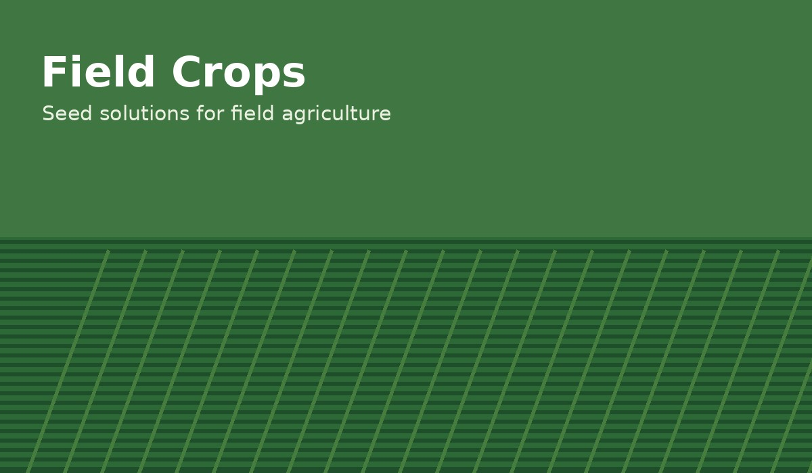
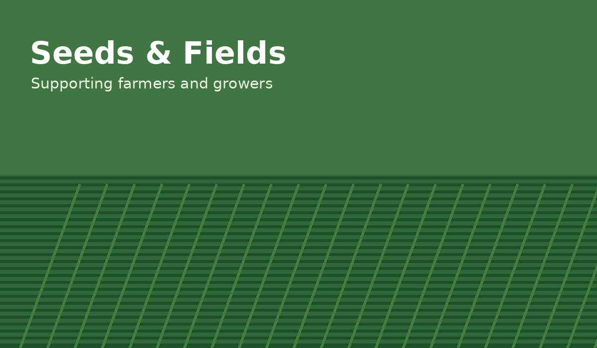
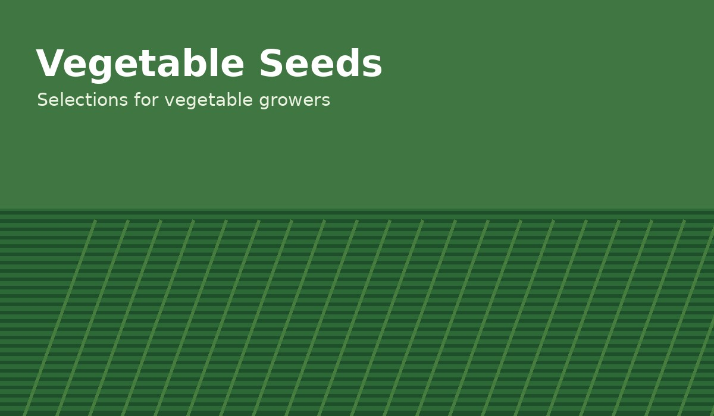
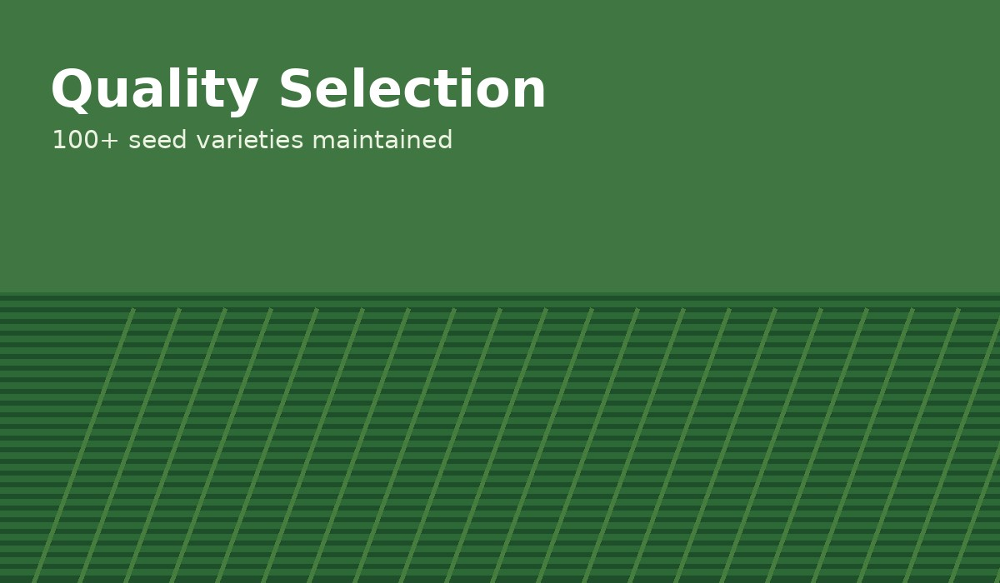

Field Crops
Seed options for large-scale and field agriculture.
JALANDHAR SEEDS CORPORATIONS
Reliable agricultural seeds for farmers, growers and agricultural partners. Quality-focused seed solutions backed by experience and service.

ABOUT US
Jalandhar Seeds Corporations is an agricultural seed company based in Okara, Punjab, Pakistan. We focus on maintaining a broad selection of seed products and serving farmers and agricultural clients with dependable seed solutions.
With 1000+ clients and 100+ seed varieties maintained, our goal is to make quality seed options accessible while building long-term relationships with growers and partners.
Talk to our team →OUR SEEDS
Our portfolio is designed to cover different farming and growing requirements. Contact us for current availability and specific varieties.

Seed options for large-scale and field agriculture.

Seed selections for vegetable growers and farms.

A broad maintained portfolio with 100+ seed varieties.
WHY JALANDHAR SEEDS
We maintain 100+ seed varieties to serve different agricultural needs.
Serving a growing network of 1000+ clients with a customer-focused approach.
Based in Okara, Punjab, with a strong connection to Pakistan's agricultural community.
We aim to help clients find suitable seed options and availability for their requirements.
READY TO CONNECT?
CONTACT US
For product information, current availability, business inquiries or general questions, contact Jalandhar Seeds Corporations.
1 Chungi Akbar Road, Okara, Punjab, Pakistan